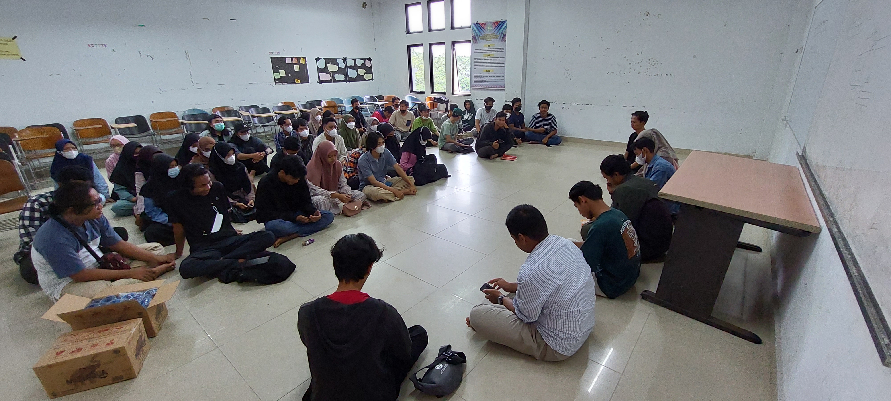
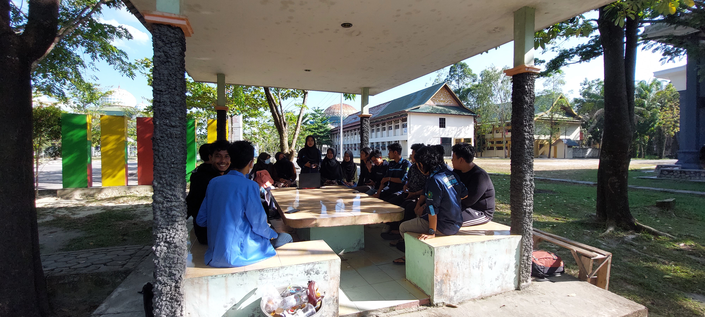
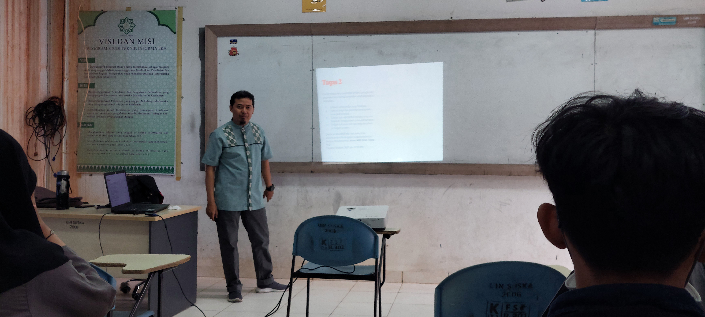
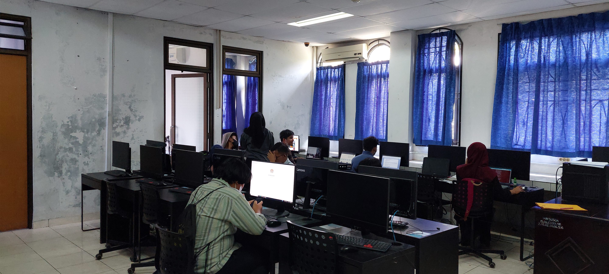
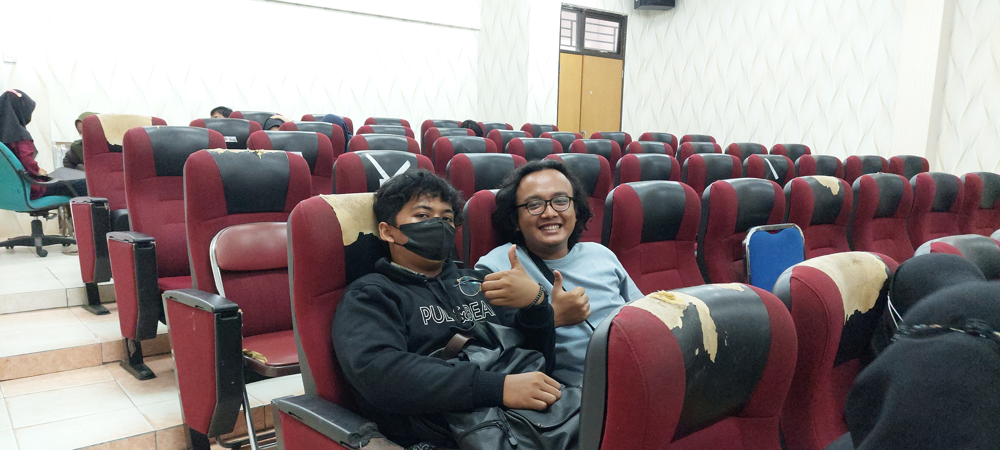
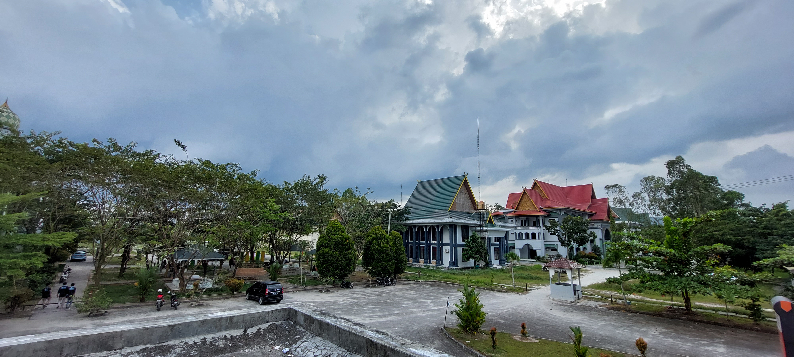

Visi & Misi Teknik Informatika
Terwujudnya program studi Teknik Informatika sebagai program studi yang unggul dalam penyelenggaraan pendidikan, penelitian, dan pengabdian kepada masyarakat yang mengintegrasikan informatika dan Islam pada tahun 2023.
Misi
- Menyelenggarakan pendidikan dan pengajaran berkualitas yang mengintegrasikan antara Informatika dan nilai-nilai keIslaman.
- Menyelenggarakan penelitian yang unggul di bidang Informatika, yang mengintegrasikan nilai-nilai keislaman.
- Memanfaatkan kajian informatika yang terintegrasi keislaman untuk melaksanakan pengabdian kepada masyarakat sebagai kontribusi terhadap pembangunan bangsa.
Tujuan
Tujuan merupakan penjabaran dari visi dan misi yang mengacu pada hasil yang ingin dicapai dan dapat diukur secara spesifik selama kurun waktu tertentu. Tujuan Program Studi Teknik Informatika UIN Suska Riau adalah:
- Menghasilkan lulusan yang unggul di bidang Informatika dan memiliki akhlak yang Islami pada tahun 2023.
- Menghasilkan silabus dan kurikulum Informatika yang mengintegrasikan keislaman pada tahun 2023.
- Menghasilkan karya-karya ilmiah di bidang Informatika yang mengintegrasikan nilai keislaman pada tahun 2023.
- Berkonstribusi melalui pengetahuan integratif dan inovatif dalam kajian Informatika untuk membangun bangsa pada tahun 2023.
Menjadikan Mahasiswa yang Berprestasi
Dan mengintegrasikan Keislaman pada Tahun 2023.
Tenaga Pengajar yang Handal
Tenaga pengajar yang merupakan lulusan dari dalam negeri maupun luar negeri dan ditunjang dengan berbagai keahlian dari berbagai profesi.
Unggul dalam Fasilitas
Kami memiliki laboratorium yang memadai untuk digunakan para mahasiswa kami dalam melakukan penelitian
Lingkungan yang bersih dan Tempat estetik
Kami memiliki lingkungan yang bersih dan juga beberapa tempat atau spot foto yang estetik
Keamanan yang terjamin
Kami memiliki keamanan yang terjamin dengan banyaknya cctv yang terpasang mulai dari setiap kelas dan laboratorium sampai dengan tempat parkir
History
Fakultas Sains dan Teknologi didirikan pada akhir tahun 2001 sebagai persiapan perubahan status dari Institut Agama Islam Negeri Sultan Syarif Qasim (IAIN SUSQA) Pekanbaru menjadi Universitas Islam Negeri Sultan Syarif Kasim Riau (UIN Suska) Riau. Cikal bakal berdirinya Fakultas Sains dan Teknologi bermula dibukanya Jurusan Teknik Informatika pada tahun 1999 dan jurusan Teknik Industri pada tahun 2001. Kedua jurusan tersebut berada di bawah naungan Fakultas Dakwah.
Pada tahun 2002, dibentuk Jurusan Sistem Informasi dan Matematika Terapan, kemudian pada tahun 2003 dibentuk Jurusan Teknik Elektro dengan program studi Teknik Elektronika dan Telekomunikasi. Latar belakang pendirian Fakultas Sains dan Teknologi beserta jurusan-jurusannya adalah untuk merespon kebutuhan dunia usaha dan industri yang ada di Provinsi Riau, serta dalam rangka mengantisipasi pengaruh globalisasi dunia.






Contact
Jurusan Teknik Informatika, Gedung Fakultas Sains & Teknologi UIN Suska Riau.
Location:
Jl.H.R.Soebrantas No.155 KM 18, Simpang Baru Panam, Pekanbaru 28293.
Email:
tif@uin-suska.ac.id
Call:
(0761) 562223